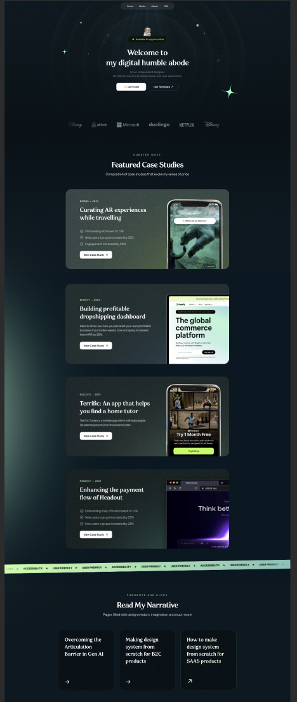

01 · Dark product editorial
9/10 fitProfessional, atmospheric and capable of carrying projects, writing and a personal voice together.
- Strongest content fit
- Best project hierarchy
- Needs restraint to avoid template sameness
The decision
Use Images 1–2 as the structural direction, then borrow Image 3’s typographic confidence and restraint. The result should feel like Yan—not a copied designer template.
Comparison
Proposed system
Keep the existing warmth and curious copy, but give the work more authority.
Typography: expressive serif for hero/section titles; clean system sans for body; optional mono only for dates, roles and tags.
Layout: centred editorial hero, then wide horizontal project stories with real screenshots. Alternate image placement to create rhythm.
Motion: subtle reveal and hover feedback only. No scroll hijacking, no constant ambient movement, and a complete reduced-motion path.
Personality: retain the avatar and the conversational writing. Use the mint/coral details as punctuation, not decoration everywhere.
Anti-AI-style rule: no diagonal “growth” arrows, sparkles, generic orbit motifs, glassmorphism, or abstract innovation icons. Creative Graph should be shown through real graph/product evidence or a confident typographic wordmark.
Current → target
The current light, friendly system with a large headline and illustrated portrait board.
A sharper, calmer opening that moves quickly into evidence of what you have made.
Implementation plan
Lock the palette, type roles, spacing scale, corner language and image treatment. Keep the plain HTML/CSS/JS architecture.
Reorder to Hero → Featured work → Writing → About → Contact. Remove repetition and write concise project metadata: role, year, outcome.
Replace abstract placeholder art with carefully cropped TRACE and Creative Graph screenshots. Build wide, linkable project panels with strong mobile crops.
Add restrained interaction, then verify 390 / 768 / 1440 widths, keyboard flow, contrast, reduced motion, asset weight and Lighthouse.
Guardrails
Online evidence checked
Creative Bloq’s 2026 portfolio roundup highlights the same balance this direction aims for: distinctive art direction without disrupting navigation, clear project context, and restraint that lets work lead. The Crit’s 2026 typography guide supports a two-family serif/sans system and treats typography as hierarchy rather than decoration. Accessibility constraints follow W3C contrast guidance and web.dev’s reduced-motion guidance.